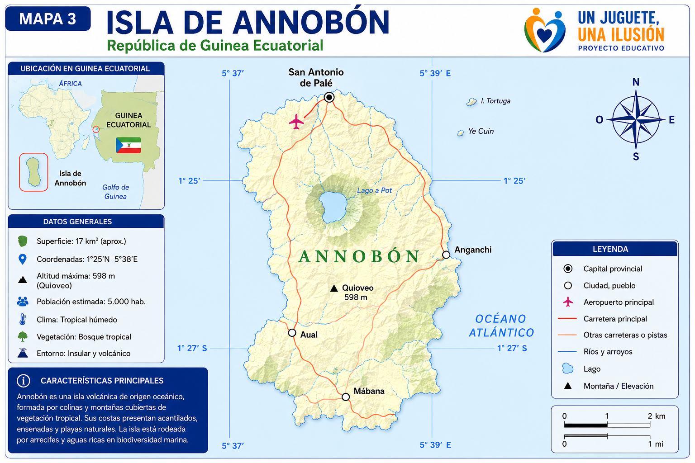
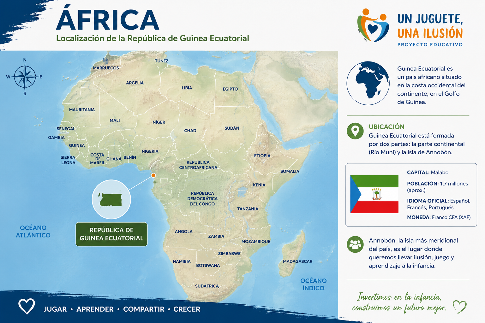
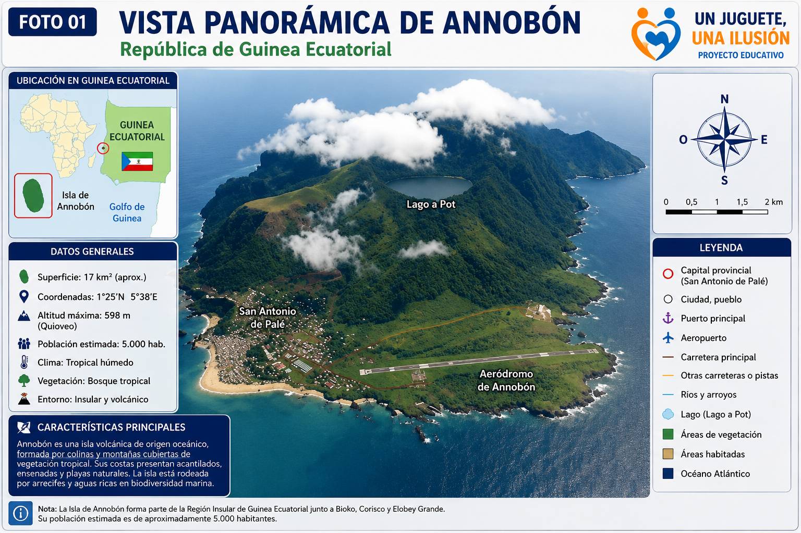
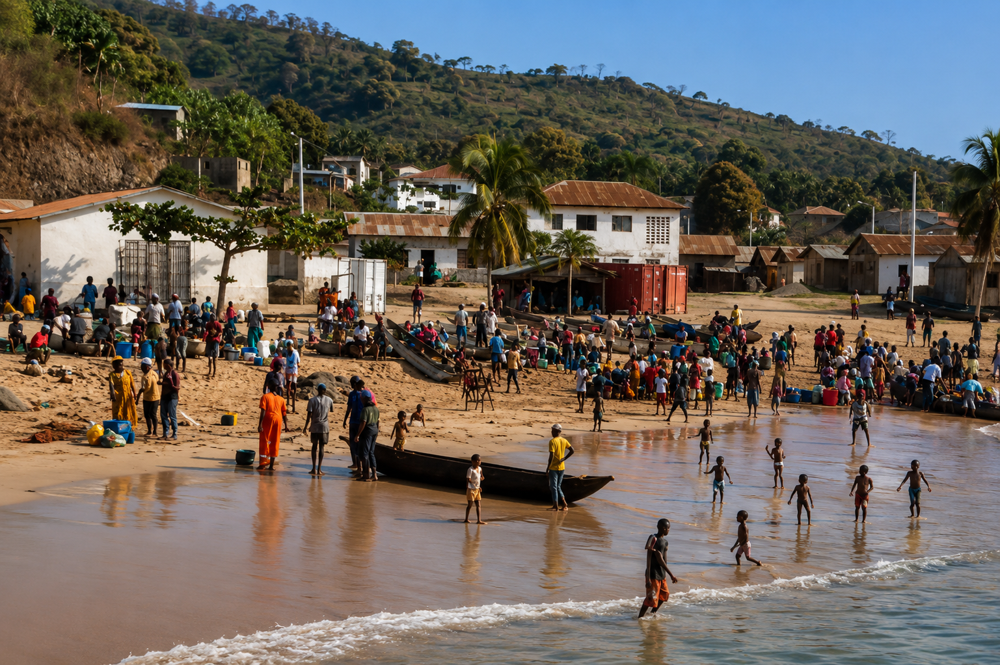
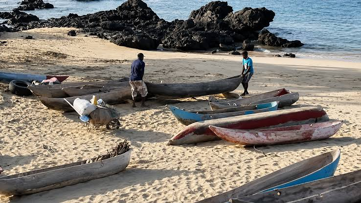

Anexos del proyecto
Esta página reúne, de forma web y clara, los anexos de apoyo que acompañan la candidatura “Un Juguete, una Ilusión” para Annobón.
Los anexos aportan contexto geográfico, educativo, social y visual para comprender mejor la propuesta.

Sommaire interno
Anexo 1 — Localización geográfica de Annobón

Situar geográficamente la isla de Annobón y facilitar la comprensión del contexto territorial del proyecto.
ResumenAnnobón es una isla volcánica situada en el océano Atlántico, en la República de Guinea Ecuatorial. Su localización condiciona el acceso a recursos y servicios, y refuerza la importancia de las iniciativas educativas y solidarias dirigidas a la infancia.
Anexo 2 — Ficha general de Annobón
Ofrecer una visión general de la isla, su identidad territorial y su contexto de intervención.
ResumenLa ficha presenta el marco general de Annobón como territorio insular, con una identidad comunitaria fuerte y un contexto de aislamiento geográfico que exige una atención sensible y adaptada.
Anexo 3 — El juego como herramienta educativa

Explicar por qué el juego puede convertirse en un recurso pedagógico central en la propuesta.
ResumenEl anexo destaca el papel del juego en el desarrollo infantil y muestra cómo los juguetes pueden favorecer la creatividad, la imaginación, la coordinación, la comunicación y el trabajo en equipo.
Anexo 4 — Tipología de los juguetes recomendados

Presentar las categorías de juguetes recomendadas para apoyar el aprendizaje y el desarrollo integral.
ResumenEl anexo reúne propuestas como juegos de construcción, juegos de lógica, materiales artísticos, deportivos y musicales, con un enfoque pedagógico y adaptado a la infancia.
Anexo 5 — Programa orientativo de una jornada educativa

Illustrar una propuesta de organización para una jornada educativa vinculada a la entrega de juguetes.
ResumenEl anexo describe una programación orientativa con recepción, actividades lúdicas, entrega organizada de material, fotografía de grupo y clausura, con un enfoque participativo y comunitario.
Anexo 6 — Galería fotográfica
Apoyar la candidatura con imágenes de contexto que ayuden a comprender la isla y la propuesta.
ResumenEste anexo visual aporta elementos de contexto territorial y comunitario, reforzando la comprensión del entorno en el que se desarrollará la iniciativa.